건설안전산업기사 (2009-03-01 기출문제)
1과목: 산업안전관리론
1. 사고 조사를 할 때 사고결과에 대한 원인요소 및 상호의 관계를 인과(因果)관계로 결부하여 나타내는 통계적 원인 분석방법은?
- 관리도
- 특성요인도
- 클로즈분석
- 파레토도
(정답률: 66%)

2. 상시 근로자가 1500명인 사업장에서 1년에 8건의 재해로 인하여 10명의 사상자가 발생하였을 경우 이 사업장의 연천인율은 약 얼마인가?
- 5.33
- 6.67
- 7.43
- 8.28
(정답률: 63%)
3. 사고방지 대책수립시 Harvey가 제창한 3E의 내용과 가장 거리가 먼 것은?
- 안전교육 및 훈련
- 시설 장비의 개선
- 안전 감독의 철저
- 위험 개소의 발견
(정답률: 47%)
4. 재해의 원인 중 직접 원인에 속하는 것은?
- 교육적 원인
- 기술적 원인
- 관리적 원인
- 물적 원인
(정답률: 80%)
5. 다음 중 학습전이(transfer)의 조건이 아닌 것은?
- 학습의 정도
- 시간적 간격
- 학습의 평가
- 학습자와 태도
(정답률: 58%)
6. 인간의 욕구를 5단계로 나누고 위계 이론을 발표한 사람은?
- 허츠버그(Herzberg)
- 하인리히(Heinrich)
- 맥그리거(McGreor)
- 매슬로우(Maslow)
(정답률: 72%)
7. 다음 중 암모니아용 정화통 외부 측면의 표시 색으로 옳은 것은?
- 녹색
- 갈색
- 회색
- 노란색
(정답률: 45%)
8. 안전교육 중 ATP(Administration Training Program)라고도 하며, 당초에는 일부 회사의 최고 관리자에 대해서만 행하여졌던 것이 널리 보급된 것은?
- TWI(Training Within Industry)
- MTP(Management Training Program)
- CCS(Civil Communication Section)
- ATT(American Telephone & Telegram Co)
(정답률: 33%)
9. 알고 있으나 그대로 하지 않은 사람에게 필요한 안전 교육은?
- 태도교육
- 기능교육
- 지식교육
- 실습교육
(정답률: 74%)
10. 다음 중 리더의 행동유형측면에서 부하들과 상담하여 부하의 의견을 고려하는 형태의 리더십은?
- 참여적 리더십
- 지원적 리더십
- 지시적 리더십
- 성취 지향적 리더십
(정답률: 69%)
11. 산업스트레스의 요인 중 직무특성과 관련된 요인으로 볼 수 없는 것은?
- 조직구조
- 작업속도
- 근무시간
- 업무의 반복성
(정답률: 67%)
12. 다음 [그림]과 같은 착시현상을 무엇이라 하는가?
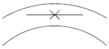
- 동화착오
- 분할착오
- 윤곽착오
- 방향착오
(정답률: 72%)
13. 하인리히(Heinrich)의 재해발생 구성비율에서 중상해가 5건 발생하였다면 무상해사고는 몇 건 발생하겠는가?
- 900건
- 1200건
- 1500건
- 1800건
(정답률: 73%)
14. 100~1000명의 근로자가 근무하는 중규모 사업장에 적용되며, 안전업무를 관장하는 전문부문을 두는 안전조직은?
- line형 조직
- staff형 조직
- 회전형 조직
- line-staff형 조직
(정답률: 69%)
15. 강도율이 5.5라 함은 연근로시간 몇 시간 중 재해로 인한 근로손실이 110일 발생하였음을 의미하는가?
- 10,000
- 20,000
- 50,000
- 100,000
(정답률: 58%)
16. 안전ㆍ보건표지의 종류와 기본모형이 잘못 연결된 것은?
- 금지표시 - 원형
- 경고표지 - 마름모형
- 지시표지 - 삼각형
- 안내표지 - 직사각형
(정답률: 48%)
17. 안전ㆍ보건표지에서 사용하는 색의 용도 중에서 파랑 또는 녹색의 보조색으로 사용되는 색채는?
- 빨간색
- 검정색
- 노란색
- 흰색
(정답률: 79%)
18. 토의(회의)방식 중 참가자가 다수인 경우에 전원을 토의에 참가시키기 위하여 소집단으로 나누어 진행하는 방식을 무엇이라고 하는가?
- 포럼(forum)
- 버즈세션(buzz session)
- 심포지엄(symposium)
- 패널디스커션(panel discussion)
(정답률: 42%)
19. 다음 중 O.J.T(On the Job Training)의 장점으로 틀린것은?
- 훈련이 추상적이지 않고 실제적이다.
- 훈련과 업무를 병행할 수 있다.
- 상사나 동료 사이에 이해나 협조정신을 강화할 수 있다.
- 통일된 내용과 동일 수준의 훈련이 될 수 있다.
(정답률: 70%)
20. 다음 중 무재해 운동 추진의 3요소가 아닌 것은?
- 최고 경영자의 경영자세
- 재해 상황 분석 및 해결
- 직장 소집단의 자주활동의 활성화
- 관리감독자에 의한 안전 보건의 추진
(정답률: 69%)
2과목: 인간공학 및 시스템안전공학
21. 다음 중 체계(system)의 특성으로 볼 수 없는 것은?
- 집합성
- 관련성
- 목적추구성
- 환경독립성
(정답률: 60%)
22. 다음 중 사후보전에 필요한 수리시간의 평균치를 나타낸 것은?
- MTTF
- MTBF
- MDT
- MTTR
(정답률: 43%)
23. 일반적으로 의자설계의 원칙에서 고려해야 할 사항과 가장 거리가 먼 것은?
- 체중분포에 관한 사항
- 의자 좌판의 높이에 관한 사항
- 개인차의 반영에 관한 사항
- 상반신의 안정에 관한 사항
(정답률: 62%)
24. 시각적 표시장치에서 지침의 일반적인 설계 방법으로 적절하지 않은 것은?
- 뾰족한 지침을 사용한다.
- 지침의 끝은 작은 눈금과 겹치도록 한다.
- 지침을 눈금면에 밀착시킨다.
- 원형 눈금의 경우 지침의 색은 선단에서 눈금의 중심까지 칠한다.
(정답률: 35%)
25. 시스템 신뢰도를 증가시킬 수 있는 방법이 아닌 것은?
- 페일 세이프(fail safe) 설계
- 풀 프루프(fool proof) 설계
- 중복(redundancy) 설계
- 록 시스템(lock system) 설계
(정답률: 43%)
26. 평균수명이 10,000시간인 지수분포를 따르는 요소 10개가 직렬계로 구성되어 있는 경우 계의 기대 수명은?
- 1,000시간
- 5,000시간
- 10,000시간
- 100,000시간
(정답률: 48%)
27. 다음 FT도에서 사상 A 의 발생 확률은? (단, 사상 B1의 발생확률은 0.3 이고, B2의 발생확률은 0.2 이다.)
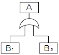
- 0.06
- 0.44
- 0.56
- 0.94
(정답률: 45%)
28. 다음 중 path set에 관한 설명으로 옳은 것은?
- 시스템의 위험성을 표시한다.
- FT도에서 Top 사상을 일으키기 위한 필요 최소한의 조합이다.
- 시스템이 고장나지 않도록 하는 사상의 조합이다.
- 일반적으로 Fussell Algorithm을 이용하여 구한다.
(정답률: 49%)
29. 화학설비에 대한 안전성 평가시 “정량적 평가”의 5항목에 해당하지 않는 것은?
- 취급물질
- 화학설비용량
- 온도
- 전원
(정답률: 49%)
30. FT도에서 사용되는 논리 기호와 명칭이 맞지 않는 것은?
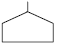
: 통합사상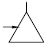
: 전이기호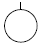
: 기본사상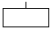
: 이하 생략의 결함사상
(정답률: 63%)
31. 시각적 부호 중 교통표지판, 안전보건 표지 등과 같이 부호가 이미 고안되어 있으므로 이를 배워야 하는 부호를 무엇이라 하는가?
- 추상적 부호
- 묘사적 부호
- 임의적 부호
- 상태적 부호
(정답률: 45%)
32. 기계와 인간의 상대적 수행도를 나타내는 다음 [그림]에서 시스템의 재설계가 요구되는 영역은?
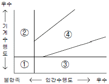
- ①
- ②
- ③
- ④
(정답률: 44%)
33. 다음 중 인간 과오의 분류시스템과 그 확률을 계산함으로써 원래 제품의 결함을 감소시키기 위하여 개발된 기법은?
- THERP
- FMEA
- FHA
- MORT
(정답률: 52%)
34. 시스템의 수명곡선에서 고장의 발생형태가 일정하게 나타나는 기간은?
- 초기고장기간
- 우발고장기간
- 마모고장기간
- 피로고장기간
(정답률: 46%)
35. 급작스런 큰 소음으로 인하여 생기는 생리적 변화가 아닌 것은?
- 근육이완
- 혈압상승
- 동공팽창
- 심장박동수 증가
(정답률: 74%)
36. [보기]와 같은 화학설비에 대한 안전성 평가 항목을 순서대로 나열한 것은?
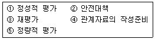
- ④ → ② → ⑤ → ① → ③
- ④ → ⑤ → ① → ② → ③
- ④ → ① → ⑤ → ② → ③
- ④ → ② → ① → ⑤ → ③
(정답률: 59%)
37. 다음 내용에 해당하는 양립성의 종류는?
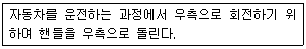
- 개념의 양립성
- 운동의 양립성
- 공간의 양립성
- 감성의 양립성
(정답률: 62%)
38. 통로나 그네의 줄 등을 설계하는데 있어 가장 적합한 인체측정자료의 응용원칙은?
- 평균치 설계
- 최대 집단치 설계
- 최소 집단치 설계
- 가변적(조절식)설계
(정답률: 50%)
39. 사물을 볼 수 있는 최소각이 30초인 사람과 최소각이 1분인 사람의 산술적 시력 차이는 얼마인가?
- 0.5
- 1.0
- 1.5
- 2.0
(정답률: 43%)
40. 다음 중 소음에 의한 청력손실이 가장 크게 나타나는 주파수는?
- 500Hz
- 1000Hz
- 2000Hz
- 4000Hz.
(정답률: 54%)
3과목: 건설시공학
41. 내구성을 확보하기 위한 콘크리트 1m3 내 염소이온량의 규제값은 일반적으로 얼마 이하인가?
- 0.⑤kg/m3
- 0.1kg/m3
- 0.2kg/m3
- 0.3kg/m3
(정답률: 54%)
42. 다음 중 콘크리트 공사에서 발생하는 결함으로 보기 어려운 것은?
- 재료분리
- cold joint의 발생
- construction joint의 발생
- 동해에 의한 콘크리트 강도 저하
(정답률: 52%)
43. 콘크리트 양생법 중 170~215℃ 사이의 온도에 8.0kg/cm2 정도의 증기압을 가하여 조기에 재령 1년의 강도와 거의 같게 할 수 있는 것은?
- 봉합양생
- 습윤양생
- 전기양생
- 오토클레이브양생
(정답률: 61%)
44. 다음 중 표준관입시험에 대한 설명으로 옳은 것은?
- 해머의 무게는 73.5±1kg이다.
- 해머의 낙하 높이는 100cm이다.
- 점토지반에서 실시하여도 높은 신뢰성을 얻을 수 있다.
- N값이 클수록 밀실한 토질이다.
(정답률: 63%)
45. 표토를 제거하고 건물의 기둥 위치에 3~3.5m 지름의 우물을 파 기초를 축조하고, 그 기초 상부에 철골기둥을 세우고 1층 바닥부터 콘크리트를 친 후 지하를 향해 공사해 나가는 흙파기 공법은?
- 심초 공법
- 뉴매틱 웰 케이슨 공법
- 개방잠함 공법
- 톱다운 공법
(정답률: 28%)
46. 수직굴착, 수중굴착 등 일반적으로 협소한 장소의 깊은 굴착에 적합한 것으로 자갈 등의 적재에도 사용하는 토공장비는?
- 클램셸
- 불도저
- 캐리올 스크레이퍼
- 로더
(정답률: 80%)
47. 건축공사계약 중 단가계약의 장ㆍ단점이 아닌 것은?
- 긴급공사시 간편하게 계약할 수 있다.
- 설계변경에 의한 수량의 증감이 용이하다.
- 총공사비가 판명되어 건축주의 자금계획 수립이 용이하다.
- 공사수량이 불분명할 때 수급자가 고가로 견적할수도 있다.
(정답률: 42%)
48. 다음 중 강관비계에 관한 설명으로 옳지 않은 것은?
- 비계기둥의 간격은 띠장방향 1.5~1.8m, 장선방향에서는 1.5m 이하로 한다.
- 띠장의 수직간격은 1.5m 이내로 한다.
- 비계기둥간의 적재하중은 400kg을 초과하지 아니 하도록 한다.
- 구조체와의 연결은 수직 및 수평방향 모두 10m 이내의 간격으로 연결한다.
(정답률: 44%)
49. 다음은 수밀콘크리트의 배합에 대한 내용이다. ( )속에 적합한 수치는?
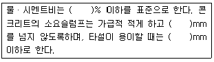
- 40, 150, 150
- 55, 120, 180
- 40, 160, 140
- 50, 180, 120
(정답률: 60%)
50. 다음 중 흙의 성질에 관한 설명으로 옳은 것은?
- 사질토는 점토에 비해 불교란 시료를 채취하기 쉽다.
- 기초하중이 그 흙의 전단강도 이상이 되면 기초가 침하 전도된다.
- 모래지반의 지내력은 함수비에 따라 큰 변화를 보인다.
- 투수계수가 클수록 침투량이 크며 점토는 사질토보다 투수계수가 크다.
(정답률: 28%)
51. A.E 콘크리트의 공기량에 관한 설명으로 옳은 것은?
- 공기량은 A.E제의 양이 증가할수록 감소하나 콘크리트의 강도는 증대한다.
- 공기량은 기계비빔이 손비빔의 경우보다 적다.
- 공기량은 비빔시간이 길수록 증가한다.
- 공기량은 잔골재의 미립분이 많을수록 증가한다.
(정답률: 40%)
52. 콘크리트의 측압에 대한 설명 중 옳지 않은 것은?
- 부어넣기 속도가 빠를수록 측압이 크다.
- 콘크리트의 비중이 클수록 측압이 크다.
- 콘크리트의 온도가 높을수록 측압이 크다.
- 진동기를 사용하여 다질수록 측압이 크다.
(정답률: 64%)
53. 다음 중 지내력시험에 대한 설명으로 옳은 것은?
- 실제 기초판이 놓일 부분의 재하판의 크기는 60~75cm 각이다.
- 총 침하량이 2mm에 달했을 때까지의 하중을 그 지반에 대한 단기허용 지내력도라 한다.
- 침하의 증가량이 2시간에 약 0.1mm 이하의 변화를 보일 때 침하가 정지한 것으로 본다.
- 매 회의 재하는 5ton 이하 또는 예정파괴하중의 1/5 이하로 한다.
(정답률: 38%)
54. 콘크리트의 부어넣기에 대한 설명 중 옳지 않은 것은?
- 콘크리트는 미리 계획된 작업구획을 끝낼 때까지 계속하여 부어넣는다.
- 일반적으로 보는 그 밑바닥에서 윗면까지 한번에 부어 넣는다.
- 콘크리트는 비빔장소에서 가까운 곳에서부터 부어 넣기 시작한다.
- 벽, 기둥 등 진동기로 다지기 곤란한 곳에서는 거푸집의 바깥을 가볍게 두드리는 것이 좋다.
(정답률: 56%)
55. 철골부재의 내화피복에 관한 설명으로 옳지 않은 것은?
- 뿜칠공법은 큰 면적의 내화피복을 단시간에 시공할 수 있다.
- 성형판 붙임공법은 주로 기둥과 보의 내화피복에 사용된다.
- 타설공법은 임의의 치수와 형상의 내화피복이 가능하다.
- 미장공법은 바탕작업이 단순하고 양생에 소요되는 시간이 짧다.
(정답률: 55%)
56. 건축주가 시공회사의 신용, 자산, 공사경력, 보유기술 등을 고려하여 그 공사에 가장 적격한 단일 업체에게 입찰시키는 방법은?
- 공개경쟁입찰
- 특명입찰
- 사전자격심사
- 대안입찰
(정답률: 62%)
57. 철골조에서 판보(plate girder)의 보강재에 해당되지 않는 것은?
- 커버 플레이트
- 윙 플레이트
- 필러 플레이트
- 스티프너
(정답률: 43%)
58. 다음 중 수평규준틀을 설치하는 목적에 해당하는 것은?
- 건축물의 기초의 너비 또는 길이 등을 표시
- 도로경계의 확정
- 신축할 건축물의 높이의 기준
- 창문틀 위치의 정확성 확인
(정답률: 73%)
59. 다음 중 철근의 가스압접이음에 대한 설명으로 옳지 않은 것은?
- 접합전에 압접면을 그라인더로 평탄하게 가공해야 한다.
- 이음공법 중 접합강도가 아주 큰 편이며 성분원소의 조직변화가 적다.
- 철근의 항복점 또는 재질이 다른 경우에도 적용가능 하다.
- 이음위치는 인장력이 가장 적은 곳에서 하고 한곳에 집중해서는 안된다.
(정답률: 78%)
60. 기초 말뚝박기 공사에서 나무말뚝의 중심간격 최소한도는?
- 2.5d
- 3d
- 4d
- 6d
(정답률: 65%)
4과목: 건설재료학
61. 다음 중 창호 철물이 아닌 것은?
- 경첩
- 플로어 힌지
- 지도리
- 익스팬션 볼트
(정답률: 46%)
62. 다음 중 금속의 부식 방지대책으로 옳지 않은 것은?
- 가능한 한 두 종의 서로 다른 금속은 틈이 생기지 않도록 밀착시켜서 사용한다.
- 균질한 것을 선택하고 사용할 때 큰 변형을 주지 않도록 주의한다.
- 표면을 평활, 청결하게 하고 가능한 한 건조상태를 유지하며 부분적인 녹은 빨리 제거한다.
- 큰 변형을 준 것은 가능한 한 풀림하여 사용한다.
(정답률: 52%)
63. 다음 중 알루미나시멘트의 특징에 관한 설명으로 옳지 않은 것은?
- 초기강도가 크다.
- 바닷물에 대한 화학적 저항성이 크다.
- 응결, 경화시에 발열량이 크다.
- 내화 콘크리트용으로는 사용이 불가능하다.
(정답률: 58%)
64. 목재의 단판(veneer)제법 중 원목을 회전시키면서 연속적으로 얇게 벗기는 것으로 넓은 단판을 얻을 수 있고 원목의 낭비가 적은 것은?
- 로터리 베니어
- 슬라이스드 베니어
- 소오드 베니어
- 반 소오드 베니어
(정답률: 60%)
65. 수분 상승으로 인하여 콘크리트의 표면에 떠올라서 얇은 피막으로 되어 침적한 물질은?
- 레이턴스
- 폴리머
- 마그네시아
- 포졸란
(정답률: 62%)
66. 실내의 라디에이터 커버, 환기구멍 등에 사용되는 금속가공 제품은?
- 펀칭메탈(punching metal)
- 벤틸레이터(ventilator)
- 리브라스(rib lath)
- 논슬립(non-slip)
(정답률: 64%)
67. 어떤 석재의 질량이 다음과 같을 때 이 석재의 표면건조 포화상태의 비중은?
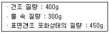
- 1.33
- 1.50
- 2.67
- 4.51
(정답률: 57%)
68. 목재의 함수율에서 섬유포화점은 얼마 정도의 함수율을 기준으로 하는가?
- 10%
- 15%
- 30%
- 100%
(정답률: 61%)
69. 시멘트의 분말도가 클 때 나타나는 현상으로 옳지 않은 것은?
- 초기강도가 크다.
- 수축균열이 적게 생긴다.
- 풍화되기 쉽다.
- 수화작용이 빠르다.
(정답률: 53%)
70. 프리팩트 콘크리트(prepacked concrete)의 특징에 관한 기술 중 옳지 않은 것은?
- 기성콘크리트나 암반 또는 철근과의 부착력이 커서 구조물의 수리 및 개조에 유리하다.
- 굵은 골재를 사용하므로 재료의 분리나 수축이 보통 콘크리트보다 크다.
- 높은 압력으로 모르타르를 주입하므로 수밀성이 크고 염류에 대한 내구성이 크다.
- 초기강도는 작으나 장기강도는 보통 콘크리트와 별 차이가 없다.
(정답률: 33%)
71. KS F 3211(건설용 도막방수재)에서 주요 원료에 따른 방수재의 종류에 해당하지 않는 것은?
- 우레탄 고무계 방수재
- 아크릴 고무계 방수재
- 에폭시 수지계 방수재
- 고무 아스팔트계 방수재
(정답률: 60%)
72. 다음 중 석재의 장점에 해당되지 않는 것은?
- 내화성이며 압축강도가 크다.
- 비중이 작으며 가공성이 좋다.
- 종류가 다양하고 색조와 광택이 있어 외관이 장중 하고 미려하다.
- 내구성ㆍ내수성ㆍ내화학성이 풍부하다.
(정답률: 57%)
73. 유리섬유로 보강하여 FRP(Fiber Reinforced Plastics)를 만드는데 이용되는 수지는?
- 폴리염화비닐수지
- 폴리카보네이트
- 폴리에틸렌수지
- 불포화 폴리에스테르수지
(정답률: 37%)
74. 방부성이 우수하고 철류의 부식이 적으나 외관이 미려하지 않아 토대, 기둥, 도리 등에 널리 사용되는 유성방부제는?
- 콜타르
- 아스팔트
- 카세인
- 크레오소트 오일
(정답률: 51%)
75. 고온소성의 무수석고를 특별한 화학처리를 한 것으로 킨스시멘트라고도 하는 것은?
- 경석고 플라스터
- 혼합석고 플라스터
- 보드용 플라스터
- 마그네시아 시멘트
(정답률: 66%)
76. 일종의 인조석바름으로 돌로마이트에 화강석 부스러기, 색모래, 안료 등을 섞어 정벌바름하고 충분히 굳지 않은 때에 표면에 거친솔, 얼레빗 등으로 긁어 거친면으로 마무리하는 것은?
- 러프코트
- 섬유벽
- 리신바름
- 테라조 현장바름
(정답률: 62%)
77. 플라스틱재료의 일반적인 성질에 대한 설명 중 옳은 것은?
- 산이나 알칼리, 염류 등에 대한 저항성이 강재보다 약하다.
- 전기저항성이 불량하여 절연재료로 사용할 수 없다.
- 내수성 및 내투습성이 좋지 않아 방수피막제등으로 사용이 불가능하다.
- 상호간 계면 접착이 잘되며 금속, 콘크리트, 목재, 유리 등 다른 재료에도 잘 부착된다.
(정답률: 61%)
78. 보통 벽돌이 적색 또는 적갈색을 띠고 있는 원인에 해당하는 것은?
- 산화철
- 산화규소
- 산화칼륨
- 산화나트륨
(정답률: 66%)
79. 다음 중 콘크리트 워커빌리티에 관한 기술로 옳지 않은 것은?
- 모가 진 깬자갈보다 둥글둥글한 강자갈을 사용하면 워커빌리티가 좋아진다.
- 시멘트의 종류에 따라 워커빌리티가 다르다.
- 감수제를 첨가하면 단위수량을 감소시켜 워커빌리티가 저하된다.
- AE제를 첨가하면 워커빌리티가 좋아진다.
(정답률: 42%)
80. 아스팔트와 피치(pitch)에 관한 기술로 옳지 않은 것은?
- 아스팔트의 단면은 광택이 있고 흑색이다.
- 피치는 아스팔트보다 냄새가 강하다.
- 아스팔트는 피치보다 내구성이 있다.
- 아스팔트는 상온에서 유동성이 없지만 가열하면 피치 보다 빨리 부드러워진다.
(정답률: 56%)
5과목: 건설안전기술
81. 액성한계(LL)가 32%, 소성한계(PL)가 12%일 경우 소성지수(IP)는 얼마인가?
- 10%
- 20%
- 30%
- 44%
(정답률: 55%)
82. 다음 중 철골작업시 추락재해를 방지하기 위한 설비가 아닌 것은?
- 안전대 및 구명줄
- 트렌치박스
- 안전난간
- 추락방지용 방망
(정답률: 86%)
83. 화물취급작업 중 화물적재시 준수해야 하는 사항에 속하지 않는 것은?
- 침하의 우려가 없는 튼튼한 기반 위에 적재할 것
- 중량의 화물은 건물의 칸막이나 벽에 기대어 적재할 것
- 불안정할 정도로 높이 쌓아 올리지 말 것
- 편하중이 생기지 아니하도록 적재할 것
(정답률: 78%)
84. 다음은 비계조립에 관한 사항이다. ( )안에 적합한 것은?
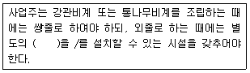
- 안전난간
- 작업발판
- 안전밸트
- 표지판
(정답률: 38%)
85. 항타기 또는 항발기의 권상용 와이어로프의 사용금지 규정으로 옳지 않은 것은?
- 와이어의 한 꼬임에서 끊어진 소선의 수가 7% 이상인 것
- 지름의 감소가 공칭지름의 7%를 초과한 것
- 심하게 변형되거나 부식된 것
- 이음매가 있는 것
(정답률: 44%)
86. 다음 중 압쇄기에 의한 건물의 파쇄작업순서로 옳은 것은?
- 슬래브 - 기둥 - 보 - 벽체
- 기둥 - 슬래브 - 보 - 벽체
- 기둥 - 보 - 벽체 - 슬래브
- 슬래브 - 보 - 벽체 - 기둥
(정답률: 44%)
87. 다음 중 크레인의 방호장치와 거리가 먼 것은?
- 비상정지장치
- 권과방지장치
- 과부하방지장치
- 충격흡수장치
(정답률: 53%)
88. 다음 중 철골작업을 중지하여야 하는 풍속 기준은?
- 풍속이 초당 10미터 이상
- 풍속이 분당 10미터 이상
- 풍속이 초당 1미터 이상
- 풍속이 분당 1미터 이상
(정답률: 59%)
89. 가설통로 중 경사로에 설치되는 발판의 폭 및 틈새 기준으로 옳은 것은?
- 발판폭 30cm 이상, 틈 3cm 이하
- 발판폭 40cm 이상, 틈 3cm 이하
- 발판폭 30cm 이상, 틈 4cm 이하
- 발판폭 40cm 이상, 틈 5cm 이하
(정답률: 42%)
90. 다음 중 스크레이퍼의 용도로 가장 거리가 먼 것은?
- 적재
- 운반
- 하역
- 양중
(정답률: 66%)
91. 다음 중 터널식 굴착방법과 거리가 먼 것은?
- TBM공법
- NATM공법
- 실드공법
- 어스앵커공법
(정답률: 57%)
92. 거푸집동바리 등을 조립하는 때 동바리로 사용하는 파이프서포트에 대하여는 다음 각목에서 정하는 바에 의해 설치하여야 한다. ( ) 안에 적합한 것은?
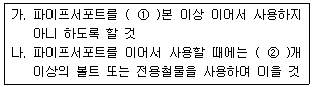
- ① : 1 ② : 2
- ① : 2 ② : 3
- ① : 3 ② : 4
- ① : 4 ② : 5
(정답률: 51%)
93. 건축물 신축시 통나무비계를 사용할 수 있는 최대높이는 몇 m 이하인가?
- 8m 이하
- 10m 이하
- 12m 이하
- 14m 이하
(정답률: 42%)
94. 콘크리트를 타설할 때 거푸집에 작용하는 콘크리트 측압에 크게 영향을 미치지 않는 것은?
- 콘크리트 타설 속도
- 콘크리트 타설 높이
- 콘크리트 설계기준강도
- 콘크리트 단위용적중량
(정답률: 48%)
95. 항타기 및 항발기를 조립하는 때의 사용 전 점검사항이 아닌 것은?
- 과부하장치 및 제동장치의 이상 유무
- 권상장치의 브레이크 및 쐐기장치 기능의 이상 유무
- 본체의 연결부의 풀림 또는 손상의 유무
- 권상기의 설치상태의 이상 유무
(정답률: 24%)
96. 근로자의 작업배치 추락위험이 있을 때 비계 조립 등에 의하여 작업발판을 설치해야 하는 높이 기준은?
- 1m 이상
- 2m 이상
- 3m 이상
- 4m 이상
(정답률: 56%)
97. 유해ㆍ위험방지계획서를 작성하여 제출하여야 하는 고용노동부령이 정하는 규모의 사업에 해당하지 않는 것은?
- 지상 높이가 31미터 이상인 건축물 또는 공작물
- 연면적 3만제곱미터 이상인 건축물
- 깊이 10미터 이상인 굴착공사
- 다목적댐, 발전용댐 및 저수용량 1천만톤 이상의 용수전용댐 등의 건설공사
(정답률: 47%)
98. 철골공사에서 기둥의 건립작업시 앵커볼트의 매립에 있어 요구되는 정밀도에서 기둥중심은 기준선 및 인접 기둥의 중심으로부터 얼마 이상 벗어나지 않아야 하는가?
- 3mm
- 5mm
- 7mm
- 10mm
(정답률: 47%)
99. 달비계(곤돌라의 달비계는 제외)의 최대 적재하중을 정함에 있어 달기와이어로프 및 달기강선의 안전계수 기준은 얼마인가?
- 5 이상
- 7 이상
- 8 이상
- 10 이상
(정답률: 33%)
100. 느슨하게 쌓여 있는 모래 지반이 물로 포화되어 있을 때 지진이나 충격을 받으면 일시적으로 전단강도를 잃어버리는 현상은?
- 모관현상
- 보일링현상
- 틱소트로피
- 액상화현상
(정답률: 56%)